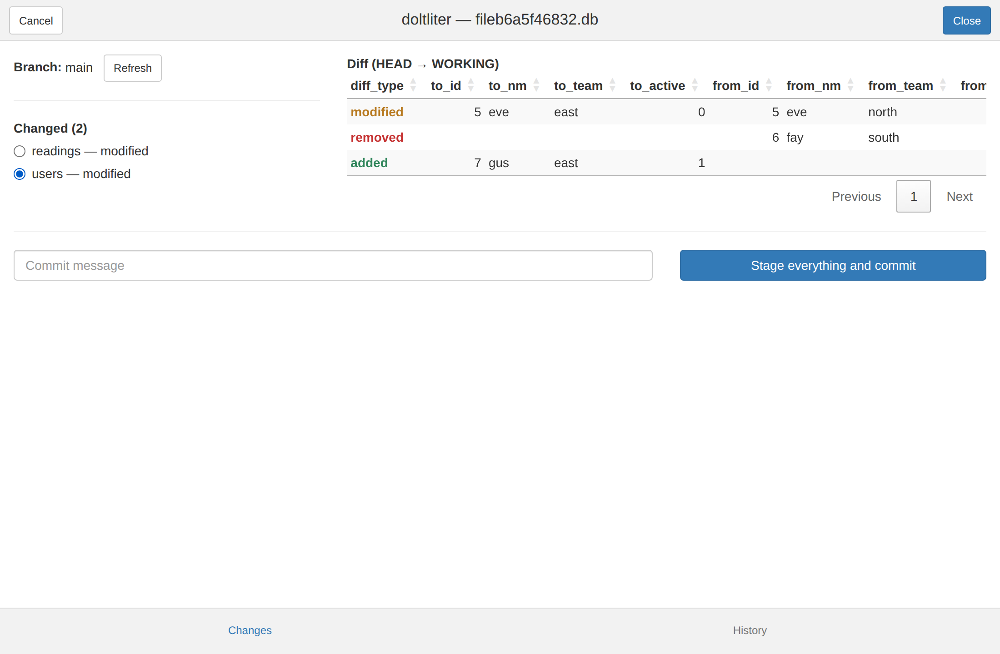
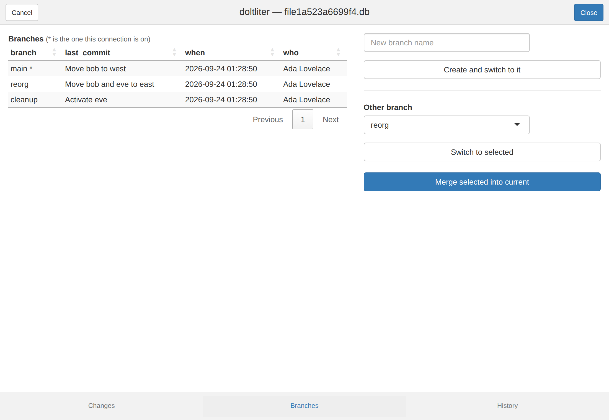
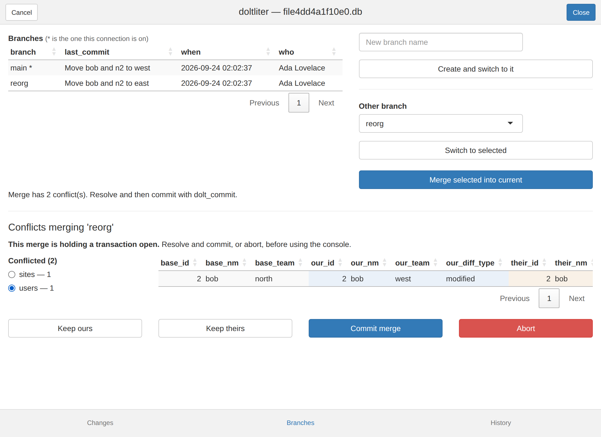
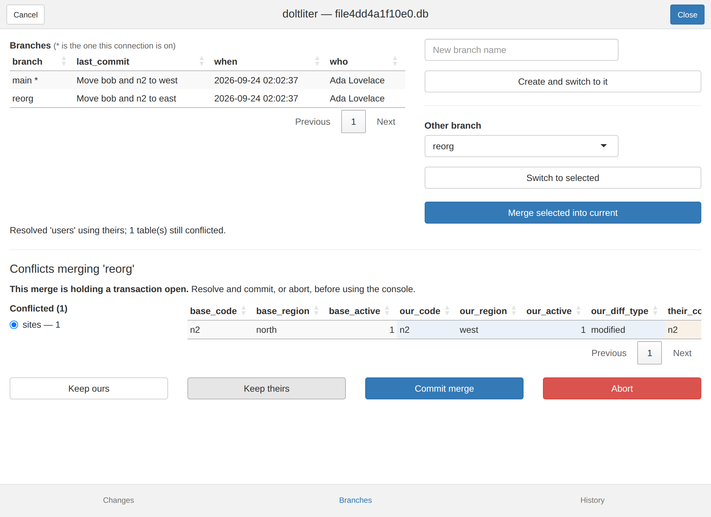

dolt_pane() is a Shiny gadget, and an RStudio addin, in
the spirit of RStudio’s Git pane: what has changed, what the change
looks like row by row, the history, and the branch operations — over a
connection you already have open.
Call it with no arguments and it uses the single open connection it can find; if there are several, it says so rather than guessing. There is also an Addins → DoltLite pane entry, which does the same thing.
It needs the suggested packages:
install.packages(c("shiny", "miniUI", "DT"))It runs on your connection, and that is the whole design
The obvious way to build this would be a background process watching the database file, so the pane could sit there permanently like the Git pane does. That does not work here, and it is worth knowing why before the screenshots make it look simpler than it is.
A background pane means a second connection. Measured against a first:
| What a pane needs | On a second connection |
|---|---|
| See uncommitted changes | works |
| Commit them | works |
| Report the branch you are on |
wrong — you on feature, it says
main
|
| See work inside an open transaction | blind — nothing, while you have changes |
| Write while you hold a transaction |
fails — database is locked
|
The third row is the one that settles it. Branches in DoltLite are per connection, so a background pane would show its own branch rather than yours, and pressing Commit could land your work on a branch you are not on, silently. Rows four and five are each independently fatal.
So the gadget runs in your R session, on the connection you hand it. The cost is that it blocks the console while open, which is the honest trade rather than a limitation to apologise for: the state that matters — your branch, your transaction, your uncommitted rows — lives in your connection and nowhere else.
Changes
The working set, the row-level diff for whichever table you select, and a commit box.

The diff is where this beats the Git pane rather than imitating it.
Git’s diffs are text, so a GUI adds modest value.
dolt_table_diff() returns structured rows —
from_/to_ column pairs — which is genuinely
better in a sortable table than printed at the console, and it is the
thing you most want to look at before committing. diff_type
leads because it is what you scan for, and is coloured green for added,
amber for modified, red for removed.
Two things the buttons are explicit about:
-
Commit refuses while a SQL transaction is open.
dolt_commit()ends the enclosing transaction, so committing from the gadget mid-dbBegin()would silently end a transaction your console still believes is running. -
“Stage everything and commit” is named that way
because
dolt_add("-A")sweeps the whole working set, not just the table on screen.
Branches
List, create, switch, and merge.

Merging, and conflicts
Merges run inside a transaction because they have to. DoltLite rolls
a conflicting merge back whole in autocommit mode, so there would be
nothing left to inspect — conflicts are only reachable inside
BEGIN/COMMIT. When one conflicts, the gadget
holds that transaction open and shows you base, ours and theirs side by
side.

Conflicts are handled one table at a time, because the conflict
columns follow the shape of the table they belong to —
our_team for one table, our_region for another
— so several conflicted tables genuinely cannot share a view. The picker
lists them with their counts and the detail follows your selection.
Keep ours and Keep theirs resolve the table
you are looking at, not every conflicted one. That is deliberate twice
over: a button that silently acted on tables off screen would be a trap,
and the whole reason two tables conflict separately is that they may
deserve different answers.

Tables leave the list as they are resolved, so it empties as you work
through it. Then Commit merge finishes, or
Abort rolls the whole thing back — which restores the rows
and clears the merge, since a rollback is exactly what undoes an
unfinished merge.
Two consequences worth keeping in mind:
- A conflicted merge means an open transaction on your connection. Finish or abort it before going back to the console. Closing the window rolls it back rather than stranding it.
- A merge is refused while the working set is dirty, because DoltLite requires a clean one. Commit on the Changes tab first.
What is not there
Remotes. dolt_push(),
dolt_pull() and friends are not wrapped here. They need a
configured remote and credentials, and their side effects reach beyond
your machine — a different class of risk from everything above.
Tags, reset, revert, cherry-pick. All available as functions; none have buttons yet.
Packaging
shiny, miniUI, DT and
rstudioapi are Suggests, not
Imports. This is one optional entry point in a package
whose job is to be a DBI backend, and most users of the backend never
open it. dolt_pane() names what is missing rather than
failing obscurely:
dolt_pane(con)
#> Error: dolt_pane() needs shiny, miniUI and DT. Install with:
#> install.packages(c("shiny", "miniUI", "DT"))Four suggested packages for one function is a fair argument for eventually moving the pane into a companion package. It costs nothing while the package is distributed from GitHub.